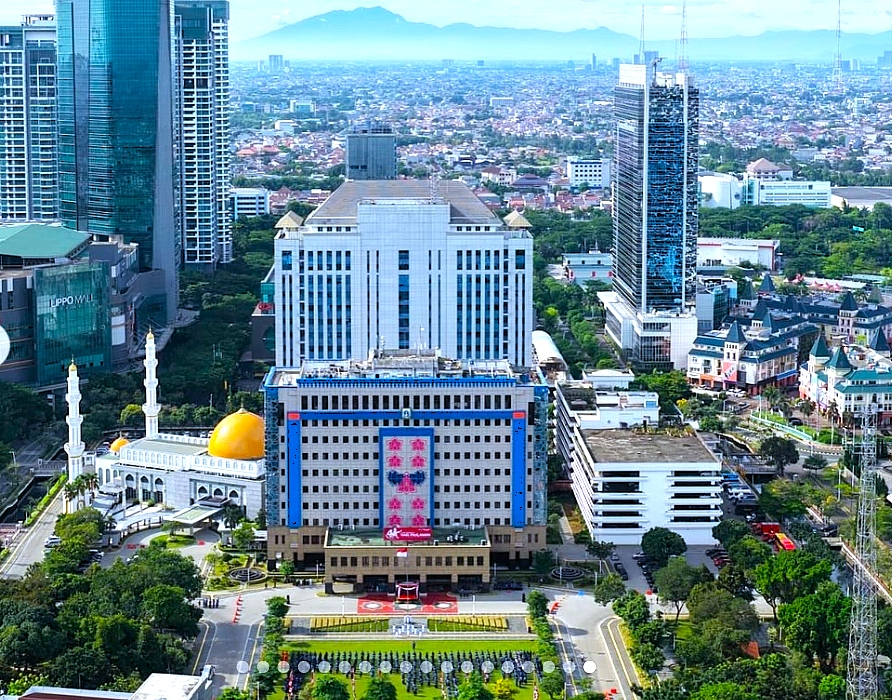
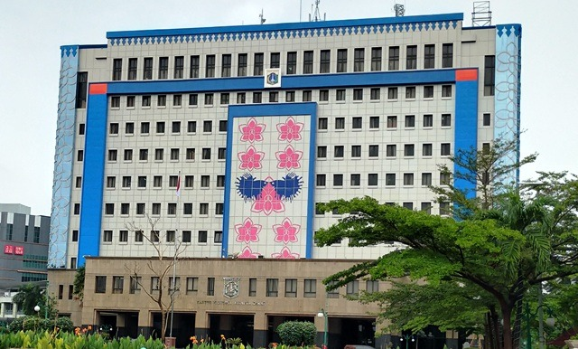
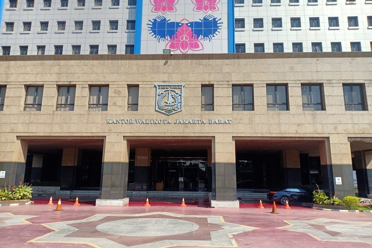

Suban Kesbangpol Kota Administrasi Jakarta Barat

Total Forum & Organisasi
Partai & Ormas
Zona Rawan
Orang Asing

Badan Kesatuan Bangsa dan Politik mempunyai tugas menyelenggarakan urusan pemerintahan bidang kesatuan bangsa dan politik.
Penguatan nilai Pancasila dan pendidikan politik bagi masyarakat demi demokrasi yang sehat.
Menjaga stabilitas ekonomi, sosial, dan budaya dari berbagai potensi ancaman dan gangguan.
Meningkatkan deteksi dini dan pencegahan konflik sosial di tengah masyarakat perkotaan.
Data kepengurusan dan keanggotaan forum serta organisasi binaan Suban Kesbangpol Jakarta Barat.
Periode: 2025–2030 | 18 Anggota Terdaftar
Pantauan harga rata-rata komoditas bahan pokok dan kebutuhan masyarakat Jakarta Barat.
Komoditas tampil
0
Harga rata-rata
Rp 0
Harga tertinggi
-
Rp 0
| No | Komoditas | Kategori | Minimum | Rata-rata | Maksimum | Status |
|---|
Pilih kecamatan untuk memusatkan peta dan melihat ringkasan pemantauan.
Status pemantauan
8 wilayah terpantau
Wilayah terpilih
Cengkareng
Gunakan filter seperti pada panel forum binaan
| No | Wilayah / Rumah Ibadah | Status / Jenis | Update / Kelurahan |
|---|
Jl. Kembangan Raya No.2 (Kantor Walikota Jakarta Barat, Blok B, Lt.13)
